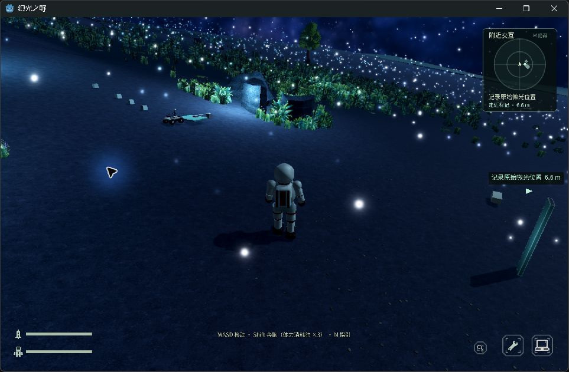
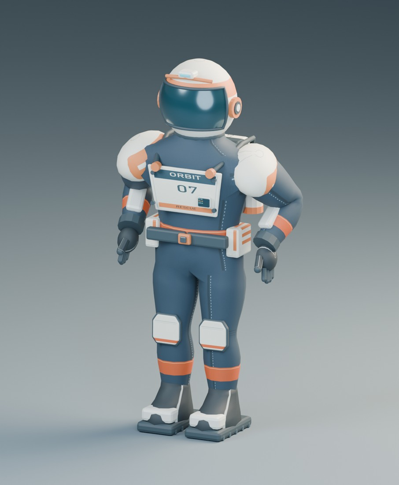

SPACE SURVIVOR
太空幸存者 · 回收与撤离资产
在生存与搜集撤离玩法开发基础上，完成航外搜救员、荧脉孢株、回收箱、能量核、维修无人机和救援艇的三维制作。将角色的四组动作、采集物与开合箱体接入回收场景，验证移动、携带和交付。
完整角色、交互道具与环境资产。
查看模型、材质与动作，打开源工程检查细节。
直接阅读：作品集 PDF ↗质检案例 PDF ↗进入回收行动 ↗下方模型可旋转、切换线框，并下载源工程。


加载本地模型与材质
拖动旋转 · 滚轮缩放 · 右键平移
MODELING & REVIEW
回收箱需要容纳任务物并完整开合，救援设备需要清楚的连接与承载结构，场景道具需要对应玩家的操作。
检查网格、法线、UV、材质和动作，将问题定位到对象与帧；结合用途区分真实缺陷、预期结构和需要补充确认的情况。
PROJECT EXPERIENCE
在三维内容生产、质量评估与专业标注项目中积累了丰富经验，已完成大量实际评估任务。熟悉从任务要求、参考材料和制作逻辑出发检查三维内容，能细致定位问题、说明扣分或不合格依据，并结合证据与反馈复核判断。
SPACE SURVIVOR
在生存与搜集撤离玩法开发基础上，完成航外搜救员、荧脉孢株、回收箱、能量核、维修无人机和救援艇的三维制作。将角色的四组动作、采集物与开合箱体接入回收场景，验证移动、携带和交付。
GROW.md
我参与了 GROW.md 原二维游戏版本的交互、代码优化与测试。原项目获 2026“翌光计划·武汉全球高校游戏创作挑战赛”最佳技术奖。在后续三维化版本的探索与制作中，围绕战后策略调整、战斗记录与成长机制，完成战术编辑台、战斗记录册与整备场景。
GROW.md 项目展示 ↗